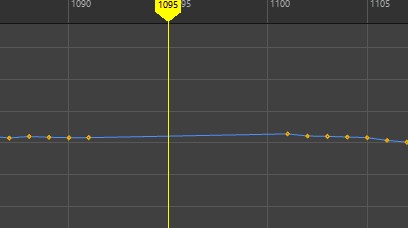

本主题介绍了“移除关键帧选项”(Remove Key Options)菜单中的每个选项。许多“移除关键帧选项”(Remove Keys Options)具有类似的设置，但它们都显示在此处。
打开“移除关键帧选项”(Remove Keys Options)：
- “曲线图编辑器”(Graph Editor)的“关键帧”(Keys)菜单 >“移除关键帧”(Remove Keys)。
- “摄影表编辑器”(Dope Sheet Editor)的“关键帧”(Keys)菜单 >“移除关键帧”(Remove Keys) >“未捕捉”(Unsnapped) >

- “摄影表编辑器”(Dope Sheet Editor)的“关键帧”(Keys)菜单 >“移除关键帧”(Remove Keys) >“当前帧之前”(Before Current Frame) >
- “摄影表编辑器”(Dope Sheet Editor)的“关键帧”(Keys)菜单 >“移除关键帧”(Remove Keys) >“当前帧之后”(After Current Frame) >
- “摄影表编辑器”(Dope Sheet Editor)的“关键帧”(Keys)菜单 >“移除关键帧”(Remove Keys) >“超出选定范围”(Outside Selected Range) >
- “摄影表编辑器”(Dope Sheet Editor)的“关键帧”(Keys)菜单 >“移除关键帧”(Remove Keys) >“删除涟漪”(Ripple Delete) >
- “摄影表编辑器”(Dope Sheet Editor)的“关键帧”(Keys)菜单 >“移除关键帧”(Remove Keys) >“时间范围”(Time Range) >
“未捕捉”(Unsnapped)选项
选择“关键帧 > 移除关键帧 > 移除未捕捉对象”(Key > Remove Keys > Remove Unsnapped) > 时，以下选项可用。
- 时间范围(Time Range)
-
指定从曲线中移除关键帧的时间范围。
-
- 全部(All)
- 从整个动画范围的曲线中移除关键帧。
- 选择(Selection)
- 使您可以选择曲线的一部分，以便可以从限定区域移除关键帧，而不是影响整个曲线。按住 Ctrl 键可一次选择多个区域。
- 开始/结束(Start/End)
- 指定的时间范围（开始时间/结束时间）内的所有关键帧均会简化。
- 开始时间(Start Time)：指定时间范围的开始时间。仅当启用“开始/结束”(Start/End)时，该选项才可用。
- 结束时间(End Time)：指定时间范围的结束时间。仅当启用“开始/结束”(Start/End)时，该选项才可用。
- 时间滑块(Time Slider)
-
简化由时间滑块的“播放开始时间”(Playback Start Time)和“播放结束时间”(Playback End Time)定义的时间范围内的曲线。
当前帧之前(Before Current Frame)/当前帧之后(After Current Frame)/当前范围外(Outside Current Range)/“删除涟漪”(Ripple Delete)选项
此选项适用于以下“移除关键帧”(Remove Keys)选项：
- 在当前帧之前移除(Remove Before Current Frame)
- 在当前帧之后移除(Remove After Current Frame)
- 在当前范围外移除(Remove Outside Current Range)
- 删除涟漪(Ripple Delete)
删除的关键帧始终受已删除关键帧任一侧的关键帧的限制，而不管指定了什么值来保留动画。
- 在边界处设置关键帧(Set key(s) at Boundary)
- 在删除的帧处设置关键帧，或者如果未设置关键帧，则在当前帧处设置关键帧，以保留动画，从而保持曲线的完整性。请参见以下动画。
-

在当前帧之前移除(Remove Before Current Frame)：“在边界处设置关键帧”(Set key(s) at boundary)处于活动状态，然后禁用“在边界处设置关键帧”(Set key(s) at boundary)选项。